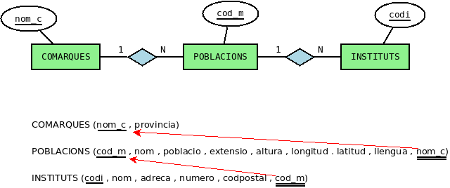

3. Esquemes Factura i Geo
Dades dels exemples
Tots els exemples que es mostraran en aquest tema s'intentaran fer sobre la connexió que ja tenim feta, és a dir, al servidor de l'Institut, connectant com a usuari geo (contresenya geo) a la Base de Dades geo. És una Base de Dades molt senzilleta, amb només 3 taules, cosa que ajudarà a una fàcil comprensió de la seua estructura. Aquest és l'esquema en el Model Entitat-Relació i en el Model Relacional:

Dades dels exercicis
Per als exercicis treballarem sobre una altra Base de Dades més completa que ens done més joc a l'hora de fer les sentències SQL. La Base de Dades s'anomena factura , i s'ha de connectar amb l'usuari factura amb contrasenya factura. Aquesta seria la seua estructura, també en Model Entitat-Relació i Model Relacional.

Recordeu que en el apartat Dbeaver havíem fet les connexions a cadascuna de les 2 Bases de Dades anteriors.
Llicenciat sota la Llicència Creative Commons Reconeixement NoComercial CompartirIgual 3.0